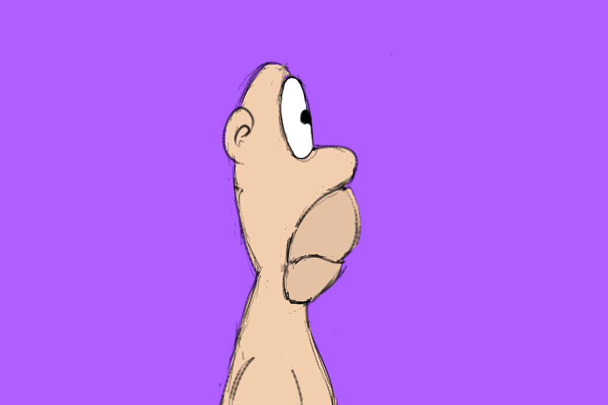
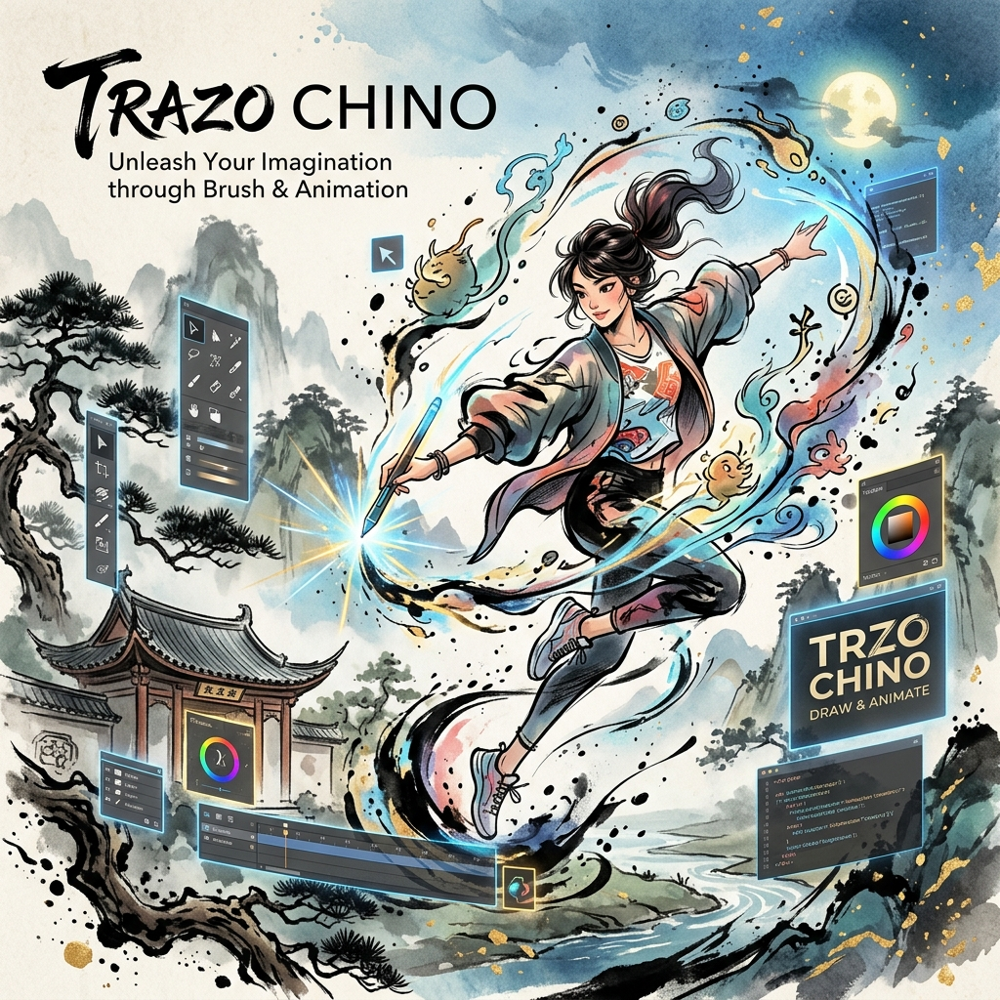

Galería de la Comunidad
El talento de nuestros usuarios no tiene límites


Software de animación y dibujo profesional diseñado por artistas para artistas. Herramientas intuitivas que rompen las barreras de la creación.

Todo lo que necesitas para llevar tus dibujos al siguiente nivel
Gestión avanzada de capas con modos de fusión, máscaras y grupos para un control total sobre tu composición.
Línea de tiempo basada en fotogramas clave con herramientas de cebolla (onion skinning) para animaciones perfectas.
Motor de pinceles de alta respuesta con soporte para sensibilidad a la presión y estabilización de trazo.
Escala, rota y deforma tus dibujos sin perder calidad ni comprometer el trazo original.
Exporta tus obras maestras en múltiples formatos (MP4, GIF, PNG) con optimización para redes sociales.
Auto-guardado inteligente y compatibilidad con formatos estándar de la industria para integración perfecta.
Mira la potencia de nuestras herramientas en acción
Simulación de fluidez y peso en animaciones 2D.
Rotación de volúmenes compleja en entorno plano.
Parallax y velocidad con múltiples planos de profundidad.
Animación de personajes en vehículos con sentido de velocidad.
Exploración de pinceles y texturas en movimiento.
Muestra la fidelidad del motor de dibujo en líneas finas.
Un pequeño ejemplo del potencial de la herramienta.
El talento de nuestros usuarios no tiene límites

"Trazo Chino ha simplificado mi proceso creativo. Las herramientas son naturales y el rendimiento es excepcional incluso en proyectos pesados."
"Lo que más valoro es la comunidad y el soporte constante. Es un software hecho pensando en los problemas reales que enfrentamos los animadores."
Únete a miles de artistas que ya están transformando sus ideas con Trazo Chino.
¿Quieres colaborar con el proyecto? También puedes usar Gumroad:
Colaborar vía Gumroad